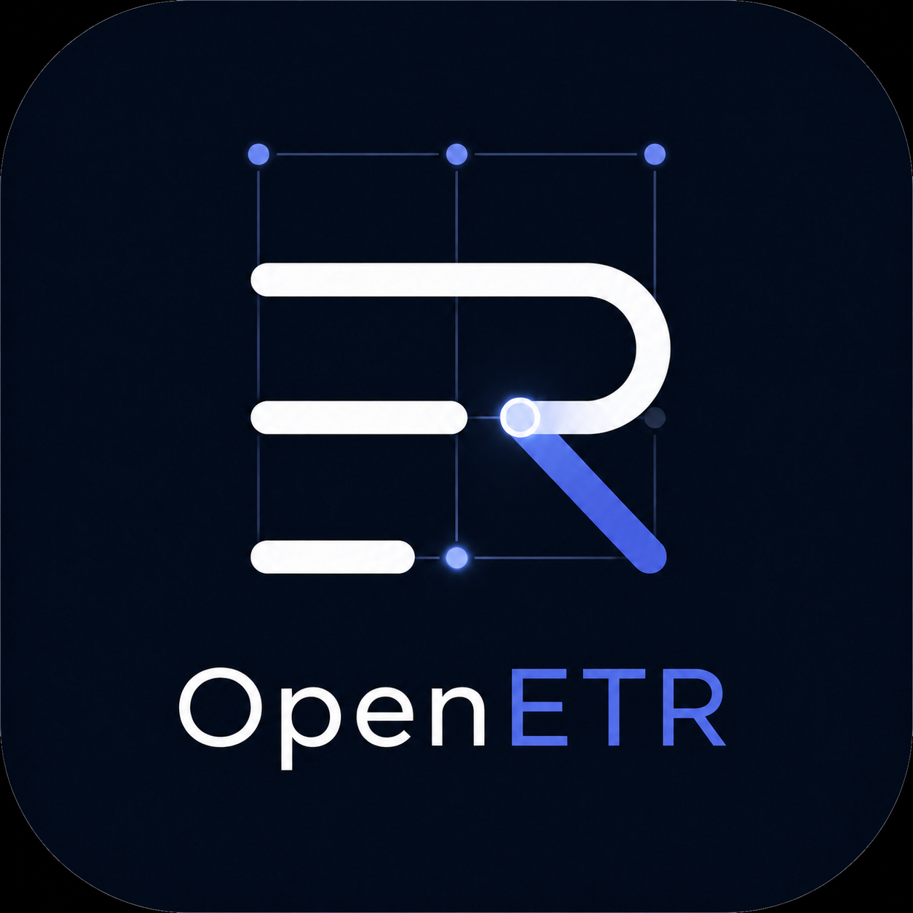
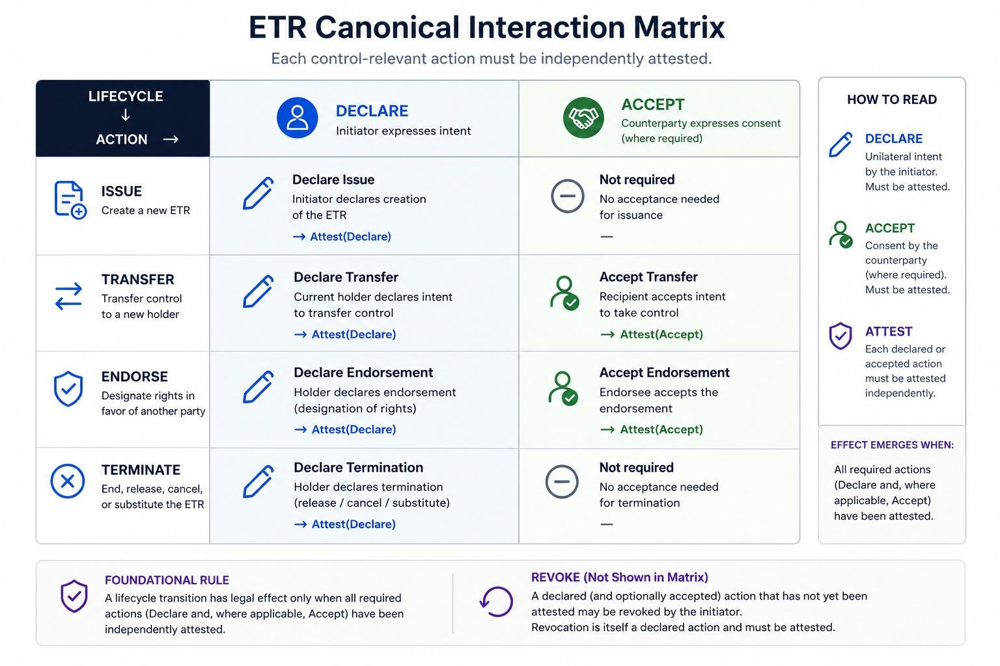

Objects
The record that carries meaning, authority, and transfer semantics.

Durable Control. Portable Records.
OpenETR is an open scheme for electronic transferable records, built on the Nostr protocol, where control is durable, verification is portable, and authority can move without platform lock-in.
OpenETR can turn any file into an ETR by deriving a durable object identifier from the file itself and binding control history to that object over time, with the resulting control events stored on open relays.
A minimal technical fabric for transfer, endorsement, and enforcement across jurisdictions, systems, and infrastructures.
Core Model
The record that carries meaning, authority, and transfer semantics.
The keys or actors able to exercise exclusive control over the record.
The signed actions that express transfer, endorsement, and enforcement.
Canonical View
This diagram shows the basic OpenETR vocabulary in one frame: an object is the record surface, a controller is the party able to exercise control, and events are the signed transitions that move authority over time.
It is useful as both a conceptual map and an implementation guide, because it keeps the scheme focused on portable control rather than on any one platform, registry, or application boundary.

Why It Matters
Records persist independently of any single vendor, registry, or institution.
Control can move without re-issuance, lock-in, or proprietary dependencies.
Proofs are machine-checkable and can be validated outside the originating system.
First Reference Implementation
Nostr already models portable, signed event data, which makes it a natural starting point for expressing records, controllers, and transfer actions.
Events can move across independent relays instead of being trapped inside a single registry, platform, or institution.
OpenETR builds on Nostr's verification model to show how durable control and portable records can work on open infrastructure today.
Underlying Philosophy
OpenETR is designed for an open, permissionless environment: events can circulate globally, while validation, attestation, and recognition remain with the party that must decide whether to rely on the resulting chain.
OpenETR does not assume a single controlling platform or registry. It aims to let control-relevant events move through shared infrastructure while remaining signed, attributable, and reviewable.
The protocol provides evidence. It does not by itself determine final legal or operational effect. That remains a matter for the assessor, attestor, or relying party applying the relevant policy.
The goal is not to prevent every possible action at the protocol layer, but to create a sound cryptographic basis on which recognition decisions can later be made.
Historical Context
Global shipping developed across ports, carriers, merchants, financiers, and legal systems long before any single sovereign could govern trade end to end.
Maritime commerce depended on documents, customs, and recognition practices that could move across jurisdictions. Bills of lading mattered because they were portable records of control, not because they belonged to one system.
OpenETR is an attempt to replicate some of that ethos digitally: publication in a shared environment, movement across institutional boundaries, and recognition based on reliable evidence rather than centralized platform control.
Digital Trade Context
The UNCITRAL Model Law on Electronic Transferable Records, or MLETR, provides a legal framework for electronic records to function like transferable paper instruments.
For trade documents such as bills of lading, warehouse receipts, and promissory notes, MLETR creates a path for digital records to carry possession-like control and legal effect.
OpenETR focuses on durable control, transfer, and independent verification, which are exactly the technical qualities needed to support MLETR-aligned digital trade documentation.
Early Uses
Under MLETR-style legal frameworks, electronic bills of lading are one of the clearest examples of why durable digital control matters.
Repository Writing
High-impact posts are added to the repository to help people understand the domain, the scheme, and the direction of the work.
Background Reading
A background essay on compression of identity, control, and portability into a durable cryptographic reference point.
A companion essay on why OpenETR is better understood as a connective scheme built on open infrastructure than as a closed application framework.
A background essay exploring what it means for a digital record to stand on its own and carry durable authority across systems.
A further exploration of durable control and the conditions under which records can move independently while retaining authority and verifiability.
Demo
A short terminal walkthrough showing how OpenETR can issue, inspect, and work with transferable record events in practice.